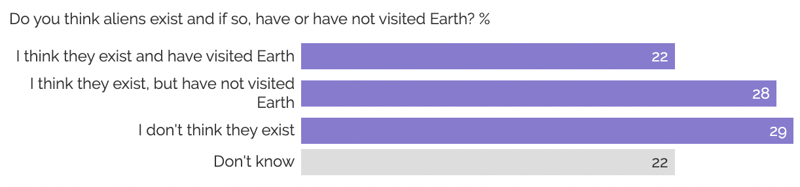
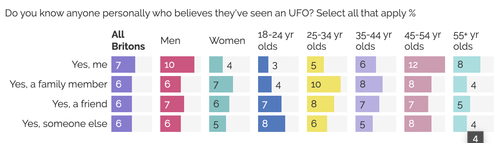
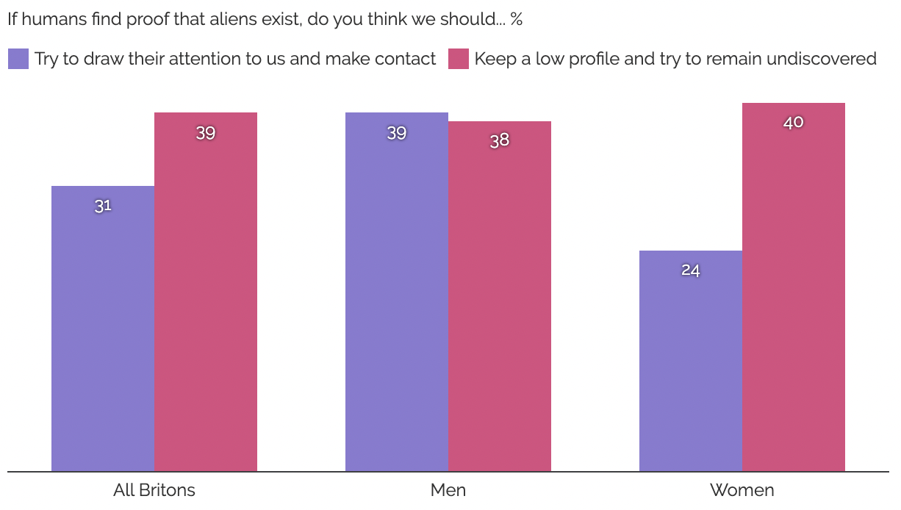

Half of Britons think aliens exist – and 7% claim to have seen an UFO
The public are more likely to say humans should try to remain undiscovered rather than make contact with extra terrestrials
A new US government report on sightings of unidentified flying objects (UFOs) neither confirms nor denies “alien activity”. YouGov data shows that half of Britons (50%) believe aliens exist, including a fifth (22%) who say they’ve been to Earth. Only three in ten people (29%) feel certain they’re not real.
Half of Britons say aliens exist, including a fifth who think they've been to Earth
One in fourteen Britons (7%) even believe they’ve seen an UFO themselves. Men are more than twice as likely as women to believe so at 10% vs 4%. Many people also have a family member (6%), friend (6%) or someone else (6%) they know who says they’ve seen an UFO. Overall, one in five Britons (20%) either say they’ve seen an UFO or know someone who has.
What to do if humans find proof that aliens exist?
If proof emerges that aliens are real, Britons are more likely to err on the side of caution. Two in five people (39%) say we should keep a low profile and hope they don’t notice us, while three in ten (31%) believe it would be a good idea to attract their attention and make contact.
Men are much more likely than women to say humans should try to make contact if proof emerges that aliens exist
Men and women are of different opinions. Women are much more likely to prefer a cautious approach, at 40%, with only a quarter (24%) wanting to make contact. Men on the other hand are tied on what the best option is, with 39% wanting to reach out and 38% preferring the “move along, nothing to see here” plan.